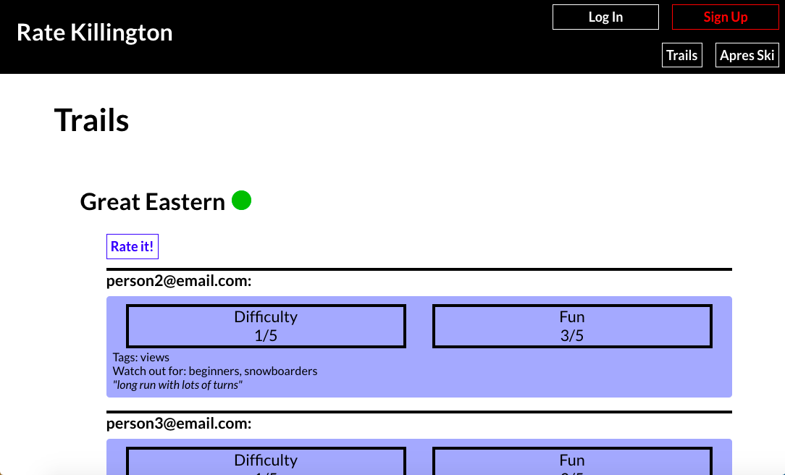

Rate Killington
Social Media Site
NYU Dynamic Web Apps Course
Fall 2020

Overview
The final project for my Dynamic Web Applications course was to create a social media site with frontend and backend where users can log in and access their and other users’ information. I created a site where skiers can rate and review various ski trails and attractions at and around the Killington Ski Resort in Vermont.
Backend
User data is stored on Firebase. In my Firestore I have a collection of reviews. Each review is identified by the user’s email address and the name of the attraction they are reviewing, and it includes their rating of each aspect of the attraction and their review. My backend uses Node.js to pull the appropriate data from the Firestore and pushes it to the frontend.
Frontend
I use React.js for the frontend. I have a container for each page of the site, including login, create account, user profile, trails, apres ski, and leave a review, and I have most of the actual page content in component JavaScript files. I also have functions that authorize Firebase appropriately when the user logs in or logs out and add new user info the Firebase when the user creates a new account. In each component, I display the appropriate user or attraction information, pulling the JSON data from Heroku and displaying it with JSX.